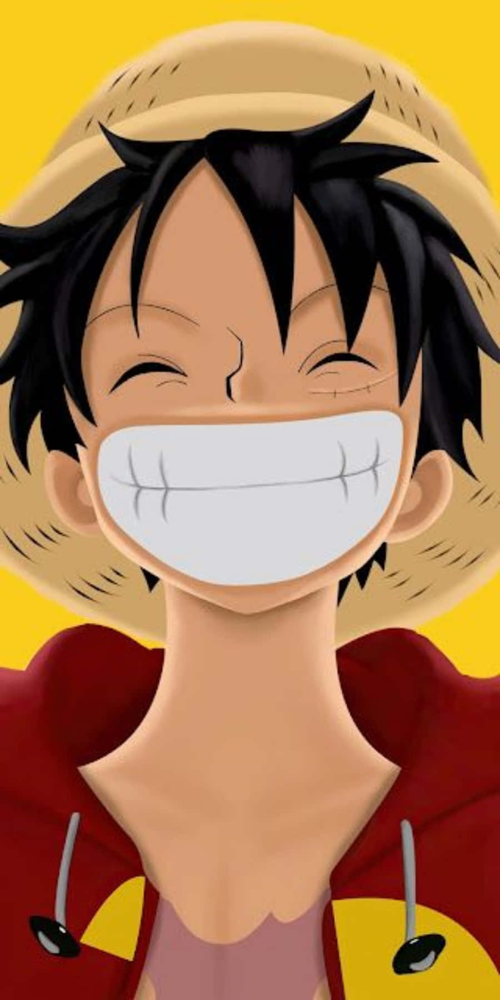

One piece
by Aaron
One piece
Chapter 1
The world is a vast ocean filled with mystery, danger, and countless possibilities. Across its endless waters, pirates sail in search of treasure, freedom, and the legendary prize known as the One Piece.
The treasure once belonged to Gol D. Roger, the Pirate King. Before his execution, Roger revealed that his greatest treasure was out there, waiting for anyone brave enough to find it.
His final words inspired countless people to take to the seas. The Great Pirate Era had begun, turning the oceans into a battlefield for those chasing their dreams.
Among those dreamers was a cheerful young boy named Monkey D. Luffy, who wanted nothing more than to become the next Pirate King.
"I'm going to be King of the Pirates!"
Luffy grew up in a coastal village where he admired a group of pirates led by a man named Red-Haired Shanks. Unlike many people who saw pirates as nothing but troublemakers, Luffy saw Shanks and his crew as adventurous people who lived freely and followed their own paths.
Shanks was laid-back and friendly, but he was also a capable pirate who understood the dangers of the sea. His carefree attitude fascinated Luffy, who dreamed of joining his crew and experiencing the world for himself.
Luffy repeatedly asked Shanks to let him become a pirate. However, Shanks refused to take the young boy along, believing that the sea was far too dangerous for him.
One day, Luffy accidentally ate a strange fruit that Shanks and his crew had obtained. It was a Devil Fruit, a mysterious fruit that granted its eater extraordinary abilities in exchange for losing the ability to swim.
THE STRAW HAT — A PROMISE FOR THE FUTURE
The fruit Luffy ate was the Gomu Gomu no Mi, which appeared to give his body rubber-like properties. His body could stretch in unusual ways, allowing him to perform incredible feats that ordinary people could never accomplish.
Although the new ability amazed him, it came with a serious disadvantage. Since he could no longer swim, falling into the ocean would leave him helpless.
Despite the danger, Luffy remained determined to become a pirate. His dream was bigger than his fear, and nothing could easily convince him to abandon it.
But the sea was not a place where dreams alone could guarantee survival. Pirates could be cruel, and even the most peaceful-looking days could suddenly turn dangerous.
When trouble arrived in the village, Luffy found himself in a situation beyond his abilities. Shanks and his crew had to face the danger, showing Luffy that true strength was not simply about looking fearless.
Shanks was willing to put himself in danger to protect someone important to him. His actions left a lasting impression on Luffy and changed the way the young boy understood courage.
A true pirate protects what matters to him.
When Shanks and his crew eventually prepared to leave the village, Luffy faced the reality that his friends would not always remain beside him. If he wanted to pursue his dream, he would eventually have to find his own way.
Before departing, Shanks entrusted Luffy with his treasured straw hat. It was more than an ordinary hat. It represented a promise between them and a reminder of the pirate Luffy hoped to become.
Shanks told Luffy to return the hat when he had become a great pirate. Luffy accepted the promise seriously, determined to grow strong enough to meet Shanks again someday.
Years later, Luffy finally set out to sea. He had no enormous ship, no powerful crew, and no guarantee that his journey would end in success.
What he possessed was an unshakable dream, a fearless spirit, and the straw hat that reminded him of his promise.
His journey would lead him to new friends, powerful enemies, forgotten histories, and islands filled with extraordinary adventures.
The ocean was vast, and the road ahead would not be easy. But Luffy was ready to face whatever awaited him.
And so, Monkey D. Luffy began his journey to find the One Piece and become the King of the Pirates.